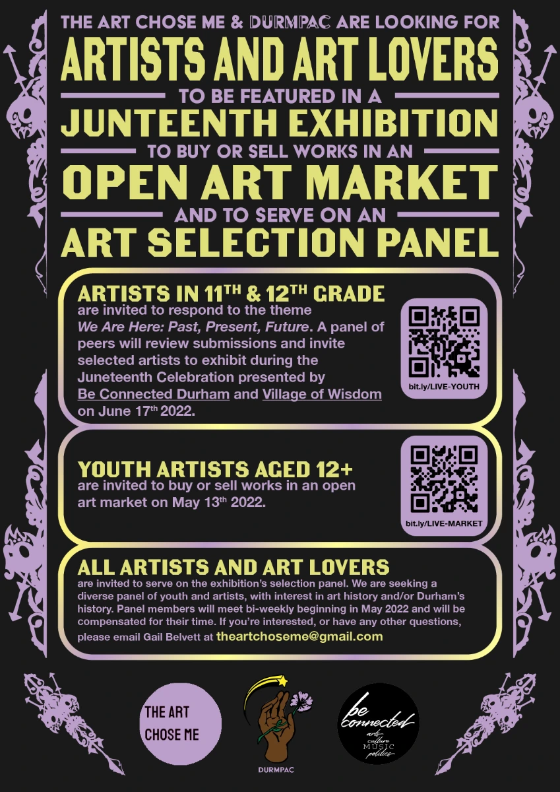
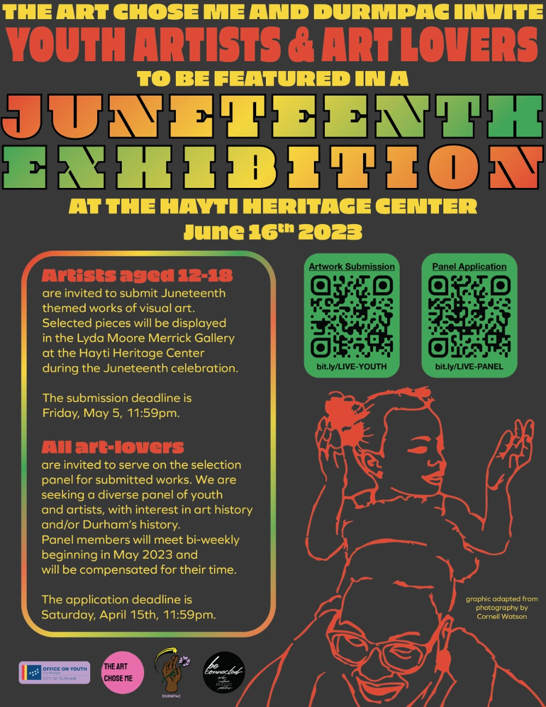

In March of 2022, Gail Belvett, founder of the The Art Chose Me, approached DurmPAC with an opportunity to get involved with the upcoming Juneteenth Celebration held by Be Connected Durham and Village of Wisdom at the Hayti Heritage Center. Specifically, DurmPAC was tasked with connecting youth artists to an open art call responding to the theme We Are Here: Past, Present, Future. DurmPAC designers Celia Ruley and Jett Pavlica began working on a promotional poster, incorporating a hand drawn rendition of the spire that adorns St. Joseph’s African Methodist Episcopal Church.
For 2023, DurmPAC members Jett Pavlica and Nori McDuffie updated the poster for this year's celebration with brighter colors and new graphics by Atigré Farmer of Durham's Office on Youth, adapted from photography by Cornell Watson.
We're looking forward to a potential collaboration for a youth artists reception after this year's celebration, as well as all of our future collaborations with The Art Chose Me.
return to homepage